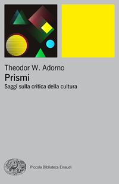
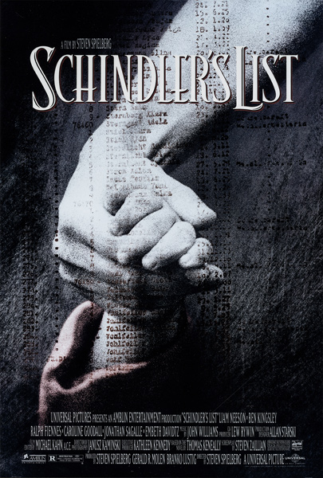

1:13:02 · 11 OPERE
The Return of Anti-Semitism in Europe. A conversation with Israeli author Chaim Noll.
Il filo del discorso
La conversazione in inglese fra Andrea Dr Divago e Chaim Noll affronta la persistenza dell’antisemitismo in Europa e il rapporto fra educazione, integrazione e fiducia nei valori liberali. Noll riconosce gli sforzi compiuti nel dopoguerra, soprattutto in Germania, ma ritiene che molte istituzioni abbiano considerato troppo presto il problema superato. Per entrambi l’odio contro gli ebrei danneggia la società intera: il tema non riguarda soltanto la sicurezza di una minoranza, ma il funzionamento della convivenza civile.
Leggi la sintesi completaRiduci la sintesi
I dati sulle esperienze delle comunità richiedono tuttavia di distinguere percezioni, episodi registrati e spiegazioni delle loro cause. Noll insiste su tre ambiti: destra razzista, antisemitismo in ambienti islamisti e ostilità presente in una parte della sinistra. Le sue spiegazioni sul ruolo dell’immigrazione e della debolezza culturale occidentale restano interpretazioni, non risultati dimostrati dall’intervista. Lo stesso ospite riconosce differenze fra paesi a maggioranza musulmana e afferma che la maggior parte dei migranti cerca una vita diversa, mentre soltanto una minoranza ha progetti violenti. Queste precisazioni non autorizzano a attribuire a tutti i musulmani, arabi, palestinesi o occidentali una stessa mentalità. Le generalizzazioni sul deserto, sulle donne o sull’assenza di contributi scientifici non sono recepite come fatti. Dr Divago sposta parte della discussione sulla società ospitante, che a suo avviso proclama valori senza praticarli e lascia un vuoto quando riduce la vita a consumo e profitto. Horkheimer, la ragione strumentale e un breve richiamo al documentario What Is a Woman? entrano in questo discorso sull’oggettività. Il Talmud è ricordato come tradizione di discussione, senza individuare un volume preciso. Anche il dibattito terminologico va mantenuto distinto dall’etimologia: nell’uso storico antisemitismo designa il pregiudizio antiebraico, e la categoria linguistica di semitico non impedisce che una persona araba possa esprimerlo. Giudeofobia è qui un termine culturale, non una diagnosi. La storia antica è richiamata attraverso Menachem Stern, probabilmente il corpus Greek and Latin Authors on Jews and Judaism. La raccolta comprende fonti e commenti in tre volumi e non soltanto espressioni ostili; non si assegnano tutte le parole degli antichi al suo curatore. Nel confronto fra cristianesimo, ebraismo e Islam i relatori sviluppano una lettura di continuità e differenziazioni. La verifica distingue testi, rituali e interpretazioni: i cambiamenti del dialogo cristiano-ebraico non hanno cancellato dal canone biblico la formula sulla sinagoga citata nel video. Il Corano stesso prevede quote ereditarie femminili, perciò non sostiene una assenza assoluta e universale di capacità patrimoniale, pur senza rendere identiche le norme storiche o moderne dei diversi paesi. Un punto centrale è la critica all’articolo di Benjamin Ward Europe’s Worrying Surge of Antisemitism del 17 maggio 2021. I relatori ne contestano il riferimento alle violazioni israeliane, ma l’originale condanna anche l’antisemitismo nelle proteste filopalestinesi e ricorda musulmani che vi si oppongono. Il giudizio contro Ward e Human Rights Watch rimane attribuito, senza diventare un accertamento. La distinzione fra critica di un governo e odio contro gli ebrei richiede contesto e contenuto: occuparsi di un conflitto soltanto o appartenere a una organizzazione non prova di per sé un movente antisemita. La parte finale si concentra sulla Shoah, sulla memoria e sulla testimonianza. Adorno, Schindler’s List e Cuore di tenebra sono riferimenti estetici o metaforici; il richiamo probabile a Intellettuale a Auschwitz di Jean Améry pone il problema dei limiti del pensiero davanti al lager. Non ne deriva una graduatoria delle vittime o una equivalenza automatica con controversie contemporanee. Noll chiude con fiducia nella resilienza ebraica e nel significato di Israele, mentre entrambi vedono nell’antisemitismo una cartina di tornasole della crisi culturale. La proposta comune è usare meglio fonti, studio e discussione: riconoscere l’odio documentato e contrastarlo richiede anche evitare le generalizzazioni su altre comunità.
I libri nel discorso

Corano
Note sul riferimento
Copertina: BUR Classici, edizione aggiornata
Edizione con introduzione, traduzione e commento di Alessandro Bausani, a cura di Layla Mustapha Ammar. Anno della ristampa non dedotto dalla copertina; nessuna edizione attribuita al video.
Quran nominato esplicitamente, ma nessuna sura o versetto citato con numero. Registrato il testo come riferimento; le generalizzazioni dei relatori non sono adottate come descrizione di tutti i musulmani o di ogni diritto nazionale.
Greek and Latin Authors on Jews and Judaism
Identificazione probabile
Note sul riferimento
Copertina editoriale associata al corpus completo: Israel Academy of Sciences and Humanities, Fontes ad Res Judaicas Spectantes, tre volumi 1974–1984; ristampe indicate dall’editore nel 1998
Il record è per All volumes: immagine utilizzata per la raccolta in tre volumi, senza inventare quale volume o ristampa mostri Noll. Non assegnato alla raccolta un ISBN appartenente a un singolo volume e non aggiunti tre riferimenti che il parlato non distingue.
Menachem Stern nominato e corpus di fonti antiche greche e romane descritto, titolo non pronunciato: identificazione probabile con la raccolta in tre volumi verificata presso l’editore, senza attribuire uno specifico volume.

Apocalisse (Libro della Rivelazione)
Identificazione probabile
Note sul riferimento
Copertina della Bibbia completa, raccolta contenente il libro: Copertina della Bibbia completa San Paolo 2014 · immagine della raccolta contenente Apocalisse
Copertina autentica del contenitore completo, non di un volume autonomo intitolato Apocalisse. La Bibbia San Paolo usa Nuova Versione dai Testi Antichi; il testo di verifica consultato è CEI 2008: traduzioni ed edizione della fonte orale non sono identificate fra loro. La stessa immagine è condivisa esplicitamente con il corpus.
La formula ricordata nel confronto sui rituali identifica probabilmente Apocalisse 2:9 o 3:9. Titolo e numero non pronunciati; verificati i due contesti senza confondere rito e canone.

What Is a Woman?
Note sul riferimento
Immagine ufficiale del documentario, 2022: Immagine promozionale del documentario statunitense del 2022, regia Justin Folk, presentato da Matt Walsh, The Daily Wire. Fornita nella pagina ufficiale del produttore; nessun ISBN librario.
Fotografia promozionale ufficiale con Matt Walsh, occhiali e barba, in ambiente urbano. Non è la copertina di un libro, né una prova dell’integralità o neutralità delle interviste montate nel film. Il titolo individua un documentario politico con una propria impostazione editoriale, distinto dalle audizioni del Senato citate separatamente.
What Is a Woman? è esplicitamente chiamato documentario. Il riferimento è al film di Justin Folk con Matt Walsh; il solo titolo non attesta un libro o un giudizio clinico.

Eclisse della ragione. Critica della ragione strumentale
Identificazione probabile
Note sul riferimento
Copertina: Einaudi, Biblioteca Einaudi, 2000, traduzione di Elena Vaccari Spagnol, ISBN 9788806154370. Il titolo è anche catalogato con la variante Eclissi; la copertina acquisita reca Eclisse. Originale inglese Eclipse of Reason, 1947.
Copertina autentica Einaudi bianca con fascia blu, autore, titolo e sottotitolo leggibili. Non è la copertina del diverso Crepuscolo. Il collegamento all’editore Bloomsbury verifica l’opera originale, mentre la copertina italiana proviene da IBS.
Horkheimer e instrumentale Vernunft richiamati nel contrasto fra razionalità e ragione strumentale. Collegamento probabile a Eclisse della ragione / Critica della ragione strumentale; non aggiunta un’opera dal solo autore.
Europe’s Worrying Surge of Antisemitism
Note sul riferimento
Fotografia originale pubblicata con l’articolo, non copertina libraria: Human Rights Watch, Dispatches, 17 maggio 2021; fotografia di Erfurt del 18 maggio 2021 pubblicata nella pagina
Fotografia editoriale autentica associata al testo, non copertina di un libro. Credito: © 2021 Martin Schutt / picture-alliance / dpa via AP Images. Data del testo 17 maggio e data della fotografia 18 maggio tenute distinte; nessuna ricostruzione di una scena o ritocco.
Titolo Europe’s Worrying Surge of Antisemitism pronunciato dopo Benjamin Ward a 2683 s e lettura dell’incipit. Fonte originale verificata, critica dei relatori distinta dai contenuti effettivi del testo.

I Protocolli dei savi di Sion (falso antisemita)
Note sul riferimento
Copertina storica di un falso antisemita: The Jewish Peril · Londra, Eyre & Spottiswoode · 1920
Fotografia museale della copertina dell’edizione inglese del 1920, conservata dall’USHMM. È mostrata come documento storico di propaganda, senza attribuire questa edizione al video o avallare le sue falsificazioni.
Protocols of the Elders of Zion titolo esplicito come esempio di propaganda ostile agli ebrei. Riuso della voce che li identifica come falso, nessuna teoria di dominio ebraico adottata come fatto.

Prismi. Saggi sulla critica della cultura
Identificazione probabile
Note sul riferimento
Copertina: Copertina autentica Einaudi, PBE Big 2018, ISBN 9788806176433, dalla scheda IBS: fondo grigio, figure geometriche e rettangolo giallo, titolo e autore leggibili. Non è la prima edizione italiana 1972.
Immagine autentica dell’opera, controllata visivamente; l’edizione di riferimento non è attribuita al filmato.
Adorno e frase sulla poesia dopo Auschwitz: identificazione probabile del saggio di critica della cultura contenuto in Prismi. Non titolo della raccolta pronunciato, non divieto legale o citazione integrale verificata nel video.

Schindler’s List
Note sul riferimento
Manifesto cinematografico ufficiale Amblin: Film statunitense del 1993, Amblin / Universal, regia di Steven Spielberg. Manifesto ufficiale conservato nella pagina Amblin, con titolo, nome del regista e crediti; non copertina del romanzo né della edizione DVD.
Manifesto autentico del film, con mani e lista di nomi. La voce riguarda il film esplicitamente richiamato.
Schindler’s List titolo esplicito come esempio cinematografico nel confronto sulla memoria della Shoah. Film, non aggiunto il romanzo di Keneally dal solo adattamento.

Cuore di tenebra
Identificazione probabile
Note sul riferimento
Copertina: Bompiani · I Classici · 2026 · traduzione di Mario Curreli
Immagine autentica dell’opera, controllata visivamente; l’edizione di riferimento non è attribuita al filmato.
Conrad e heart of darkness nominati nel registro della metafora: collegamento probabile a Cuore di tenebra, non lettura di un passo del romanzo.

Intellettuale a Auschwitz
Identificazione probabile
Note sul riferimento
Copertina: Bollati Boringhieri · Varianti · 2011 · traduzione di Enrico Ganni
Immagine autentica dell’opera, controllata visivamente; l’edizione di riferimento non è attribuita al filmato.
Jean Améry, Auschwitz e condizione dell’intellettuale descritti, titolo non pronunciato. Collegamento probabile a Intellettuale a Auschwitz / At the Mind’s Limits; non un nuovo libro dal solo nome e nessuna gerarchia universale delle sofferenze.